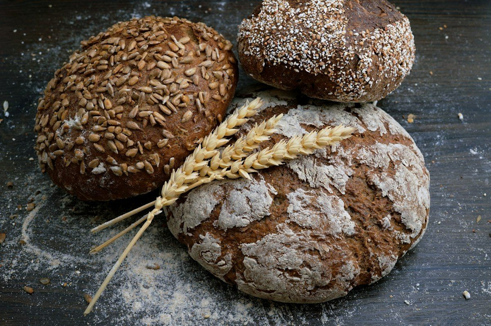

El auténtico sabor de nuestra tradición
Desde el año 2000, horneamos panes de verdad, dulces caseros y queques de celebración con ingredientes nobles, paciencia y ese toque familiar que distingue a las mesas cajamarquinas.

Los Favoritos de Cajamarca
Nuestras especialidades más queridas, preparadas cada madrugada para llevar aroma y calor a tu hogar.
Promociones y Combos Especiales
Armados para el desayuno familiar o el lonche de la tarde con el mejor ahorro.
Más de dos décadas amasando con el corazón
Nuestra historia comenzó en el año 2000 en el barrio San José de Cajamarca, en un local alquilado del Jr. Hualgayoc. Con un horno modesto y la receta familiar del pan torta y el pan de agua, don William convirtió el oficio aprendido en el campo en su propio negocio.
Con el cariño de los vecinos crecimos y nos trasladamos a nuestro local propio en la Urb. El Amauta (Jr. Chanchamayo 1874), sumando pan integral, bizcochos, molletes, rosquitas y nuestra línea de pastelería. Hoy seguimos horneando con las mismas recetas de familia.
Lo que dicen nuestros clientes en Cajamarca
Familias que nos eligen día a día para compartir momentos especiales alrededor de la mesa.
¿A qué hora sale el pan caliente?
Atendemos en dos turnos diarios: 4:30 AM - 10:00 AM y 4:00 PM - 9:00 PM, con pan crocante y humeante en cada horneada:
¿Quieres asegurar tu pedido?
Escríbenos por WhatsApp y te lo guardamos o lo enviamos a tu domicilio en Cajamarca.
Hacer mi Pedido por WhatsApp →